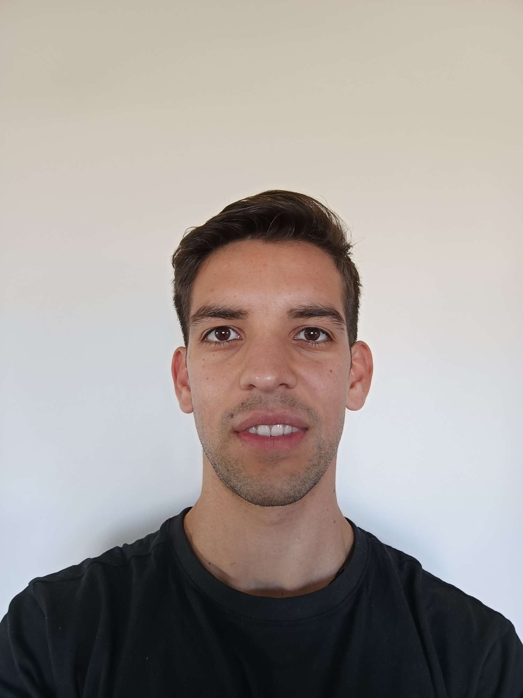

Transformando datos en insights estratégicos con SQL, Power BI y BigQuery. Especializado en Business Intelligence y análisis de datos para la toma de decisiones basadas en datos.

Analista de Datos con enfoque en Business Intelligence
Soy Analista de Datos con más de 3 años de experiencia transformando datos complejos en insights accionables que impulsan la toma de decisiones estratégicas. Mi formación en Ingeniería Industrial me proporciona una base sólida en pensamiento sistemático y optimización de procesos.
Especializado en el desarrollo de dashboards interactivos y sistemas de Business Intelligence utilizando SQL, Power BI y BigQuery. Trabajé en proyectos que abarcan desde marketing digital hasta análisis en áreas comerciales y logísticas, combinando análisis de datos con investigación de contexto y mercado para identificar oportunidades de optimización en resultados, márgenes y reducción de costos operacionales.
Optimización de procesos operacionales y campañas de marketing digital con impacto medible
Background en Ingeniería Industrial aplicado al análisis de datos y BI
Español (nativo) e Inglés upper-intermediate/avanzado
Desde extracción de datos con SQL hasta dashboards ejecutivos en Power BI
Herramientas y plataformas que utilizo para análisis de datos
Proyectos de análisis de datos y BI desarrollados en GitHub
Colección de dashboards y reportes interactivos desarrollados en Power BI. Incluye análisis de ventas, KPIs operacionales y visualizaciones de datos de negocio.
Proyectos de análisis de datos utilizando Python, Pandas y NumPy. Incluye exploración de datos, limpieza, transformación y visualizaciones.
Repositorio de queries SQL para análisis de datos, optimización de consultas y extracción de insights de bases de datos relacionales.
Trayectoria en análisis de datos y Business Intelligence
Formación académica y desarrollo profesional continuo
Formación en optimización de procesos, análisis estadístico, investigación operativa y gestión de proyectos. Base sólida en pensamiento analítico y resolución de problemas complejos.
Certificación profesional en análisis de datos, visualización avanzada, desarrollo de dashboards interactivos, DAX, Power Query y mejores prácticas de Business Intelligence.
Certificación en SQL avanzado cubriendo consultas complejas, optimización de queries, análisis de datos, joins, subqueries, window functions y manipulación de bases de datos.
¿Interesado en colaborar? Conectemos